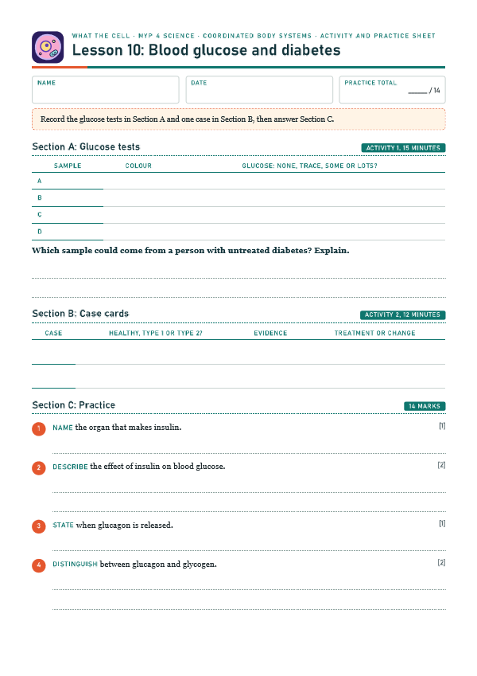

By the end of the lesson you can
- Describe how insulin and glucagon control blood glucose
- Interpret a blood glucose graph
- Compare type 1 and type 2 diabetes
- Test samples for glucose
Keys: arrows or a presentation clicker move the slides, F for full screen. Slides with a red dot have a video or simulation.
Videos (all 5 minutes or less)
- 2:11
Insulin and glucagon
FuseSchool. While you watch: Which hormone lowers blood glucose? Slide 9.
Simulations
- Lab
Print and practise

Activity and practice sheet
Used in the lesson’s activities, with practice questions. Your teacher has the answers.
Download (PDF)Lesson 10 slides
All 16 slides in one file, to read again or print. The video buttons on the slides open YouTube.
Download the slides (PDF)Revising? The Revision tab on the unit page has the unit notes and review.
Class activity pack
Everything to print for the lesson’s activities: picture cards, sorting mats, station cards with their kit lists, and the teacher’s set-up notes. Print it before class.
Download the activity pack (PDF)Notes: Blood glucose and diabetes
glucose
The sugar cells use for respiration. For example: carried in the blood.
insulin
Hormone that lowers blood glucose. For example: made by the pancreas.
glucagon
Hormone that raises blood glucose. For example: made by the pancreas.
glycogen
The store of glucose in the liver and muscles. For example: like a savings account.
type 1 diabetes
The pancreas makes little or no insulin. For example: treated with insulin.
type 2 diabetes
Cells stop responding well to insulin. For example: linked to diet, weight, inactivity.
Key words
| insulin | lowers blood glucose |
|---|---|
| glucagon | raises blood glucose |
| glycogen | glucose store in liver and muscles |
| type 1 diabetes | too little insulin made |
| type 2 diabetes | cells respond poorly to insulin |